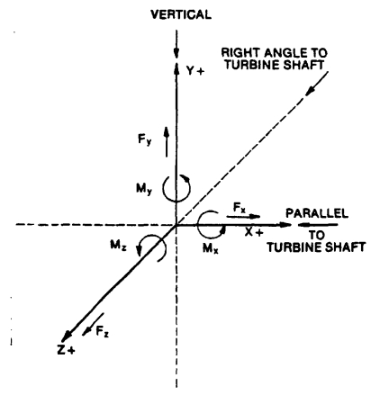

NEMA-SM23
본 페이지는 NEMA-SM23중 배관의 허용응력 부분(8.4.6)을 발췌하여 정리한 자료이며, 실제 계산은 SM-23
Calculation을
참고하시기 바랍니다.
8.4.6 Allowable Forces and Moments on Steam Turbines
The Force and moments action on steam turbines due to the steam inlet, extraction, and exhaust connections
should be limited by the following;
( 흡입구(inlet), 배출구(Extraction), 배기구(Exhaust)에 의하여 증기터빈에에서 작용하는 힘과 모우멘트는 다음과 같이 제한되어야 한다. )
8.4.6.1 The total resultant force and total resultant moment imposed on the turbine at any connection
should
not exceed the values per Limit 1.
( 어떠한 연결에서도 스팀터빈에 가해지는 힘의 합과 모우멘트의 합은 Limit 1을 초과해서는 안된다. )
3FR+MR ≤ 500 De (Limit 1)
where:
FR = Resultant force (pounds) at the connection. This includes pressure force where unrestrained expansion
joint are used except on vertical down exhausts.
( 구속되지 않은 Expansion Jount가 수직하향에 이용된 것을 제외한 압력에의한 힘은 포함됩니다. )
Full vacuum load is allowd on vertical down
exhaust flanges. It is not included as part of the piping load from Figure 8-15.
( 수직하향 방향의 Exahaust Flange는 Full Vacuum이 걸리는 것으로 적용하며, 그림 8-15의 Piping Load에는포함하지 않습니다. )
FR = √ (Fx² + Fy² + Fz²)
MR = Resultant moment (foot-pounds) at the connection from Figure 8-15.
( 그림 8-15과 같이 연결부분에서의 모우먼트의 합(foot-pounss) )
MR = √ (Mx² + My² + Mz²)
De = Normal pip size of the connection in inches up to eight inches in diameter.
( 직경이 8인치 까지는 Normal Pipe size. )
De = Normal Diameter
For size grather than this, use a value of
( 이보다 클 경우는 다음 수식을 적용한다. )
De = (16 + Nominal Diameter) / 3

8.6.2 The combined resultants of the forces and moments of the inlet, extraction, and exhaust commections.
resolved at the centrlines of exhaust connection should not exceed the values per Limit 2.
( 흡입구(Inlet), 배출구(Extraction), 배기구(Exhaust)들의 힘과 모우먼트의 조합에 의한 결과는 배기구(extraction connection)에서 해소되어야 하며, 이는
Limit 2. 값을 초과해서는 안된다. )
FCx = Fx_in - Fx_ex
FCy = Fy_in - Fy_ex
FCz = Fz_in - Fz_ex
FC = √(FCx² + FCy² + FCz²)
MCx = Mx_in - Mx_ex
MCy = My_in - My_ex
MCz = Mz_in - Mz_ex
MC = √(MCx² + MCy² + MCz²)
a. These resultant should not exceed:
( 이들은 다음 계산된 결과를 초과해서는 안된다. )
2Fc + Mc ≤ 250 Dc (Limit 2)
where:
Fc = Combined resultant of inlet, extraction, and exhaust forces, in pounds.
( 흡입구, 배출구, 배기구에 걸리는 힘의 조합 결과 (lb) )
Mc = Combined resultant of inlet, extraction, and exhaust moments, and moments resulting from force,
pound-feet.( 흡입구, 배출구, 배기구에 걸리는 모우먼트의 조합 결과 (lb-ft) )
Dc = Diameter (in inches) of a circulator opening equal to the total areas of the inlet, extraction, and
exhaust openings up to a value of 9 inches in diameter.
( 등가직경의 크기가 9인치까지는 흡입구, 배출구, 배기구의 등가직경을 적용 )
Dc = Equivalent Diameter
For values beyond this, use a value of Dc equal to : (
등가직경의 크기가 9인치보다 클경우 다음 수식을 이용 보정한다. )
Dc = (18+Equivalent diameter) / 3
b. The components (Figure 8-15) of these resultants should not exceed:
( 그림 8-15의 계산결과에 따른 힘과 모우먼트들은 다음 조건을 넘어서는 안된다. )
The components are as follows:
( 구성 요소는 다음과 같다. )
Fx = Horizontal components of Fc Parallel to the turbine shaft. (터빈 Shaft에 평행한 Fc의 수평 구성요소 )
Fy = Vertical component of Fc. ( Fc의 수직 구성요소 )
Fz = Horizontal component of Fc at right angles to the turbine shaft. ( 터빈 Shaft에 직각인 Fc의 수평성분 )
Mx = Component of Mc around the horizontal axis paralled to the turbine shaft. ( 터빈 축과 평행한 수평축 주위의 Mc 성분 )
My = Component of Mc around the vertical axis. ( 수직축을 중심으로 한 Mc의 성분 )
Mz = Component of Mc around the horizontal axis at right angles to the turbine shaft. ( 터빈 Shaft에 직각인 수평축 주위의 Mc
성분 )
Allowable forces and moments for turbines with various inlet and exhaust sizes are shown on table 9-3
( 다양한 입구 및 배기크기의 터빈에 대한 허용 가능한 힘과 모우멘트는 표 9-3에 나와 있습니다. )
8.4.6.3 For installation of condensing turbines with a vertical down exhaust and unrestrained expansion
joint at
the exhaust, an additional amount of force caused by pressure loading is allowd. (This additional force
is
perpendicular to the face of the ehaust flange and central)
( 수직하양 배기 및 배기부에 구속되지 않는 팽창조인트가 있는 Condensing turbine 설치의 경우 압력부하로 인한 추가 힘이 허용됩니다.(이 추가힘은 배기 플랜지의
면과 중앙에
수직입니다.) )
For this type of application, calulate the vertical force component on the exhaust connection excluding
pressure
loading. Use this number for vertical force component on the exhaust connection in making calculations
outlined
in the 8.4.6.1 and 8.4.6.2
( 이러한 유형의 적용에서는 합력부하를 제외하고 배기 연결부의 수직력 성분만을 계산합니다.
8.4.6.1 및 8.4.6.2에 설명된 계산을 할 때 배기 연결부의 수직력 성분에 이 숫자를 사용하십시오. )
The force caused by the pressure loading fon the exhaust is allowed in addition to the values
established by the
foregoing up to maximum value of vertical force in pounds on the exhaust connection (including pressure
loading)
of 15.5 times the exhaust area in square inches.
( 배기에 대한 압력 부하로 인해 발생하는 힘은 배기 연결(압력 부하 포함)에 대한 수직 힘(압력 부하 포함)의 최대값에 의해 설정된 값 외에 배기 면적(제곱인치)의 15.5배까지
허용됩니다. )
8.4.6.4 Thest values of allowable forces and moments pertain to turbine structure only. They do not
pertain to
the forces and moments in the connection piping, flange, and flange bolting, which should not exceed the
allowable stress as defined by applicable code and regulatory bodies.
( 허용 가능한 힘과 모멘트의 가장 큰 값은 터빈 구조에만 해당됩니다. 그것들은 연결 배관, 플랜지 및 플랜지 볼트의 힘과 모멘트와 관련이 없으며 해당 코드 및 규제 기관에서
정의한 허용응력을 초과해서는 안 됩니다. )